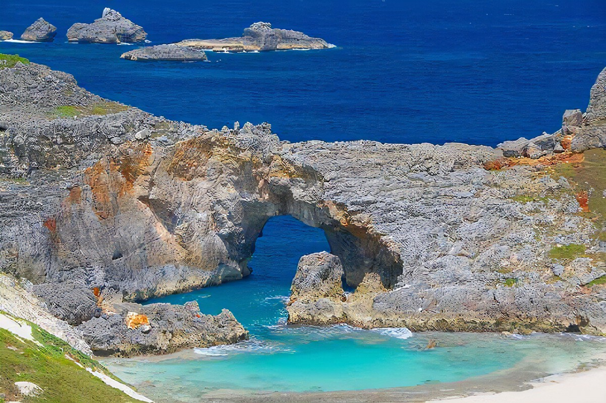
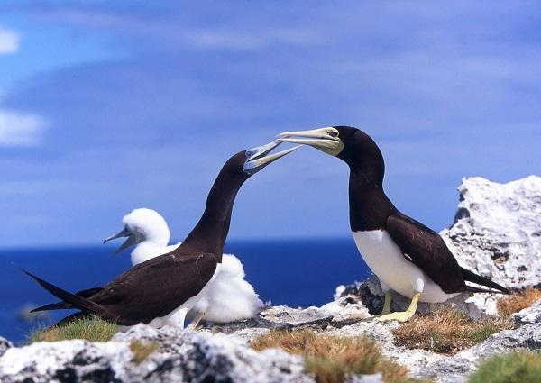
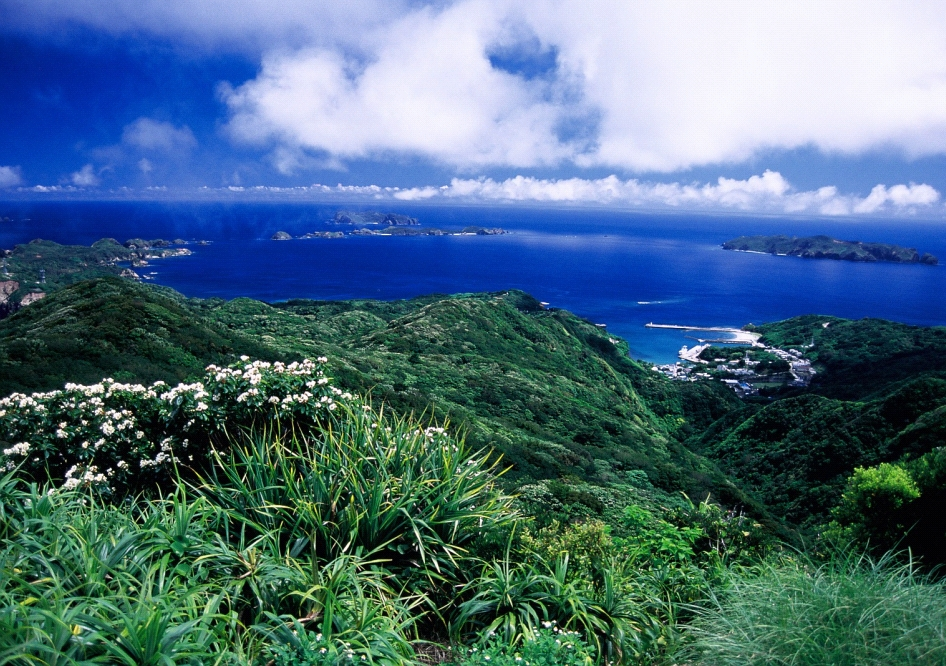
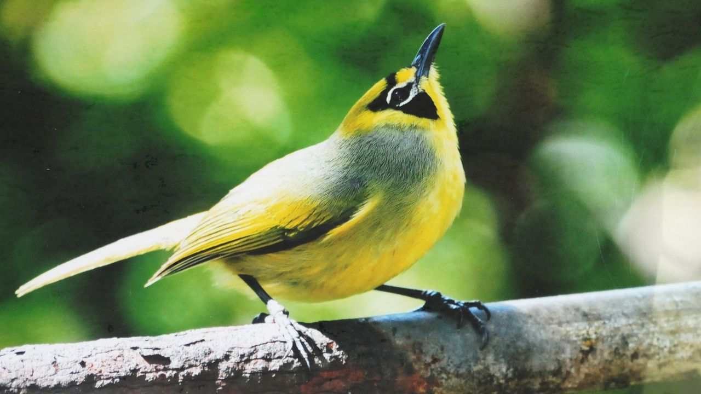
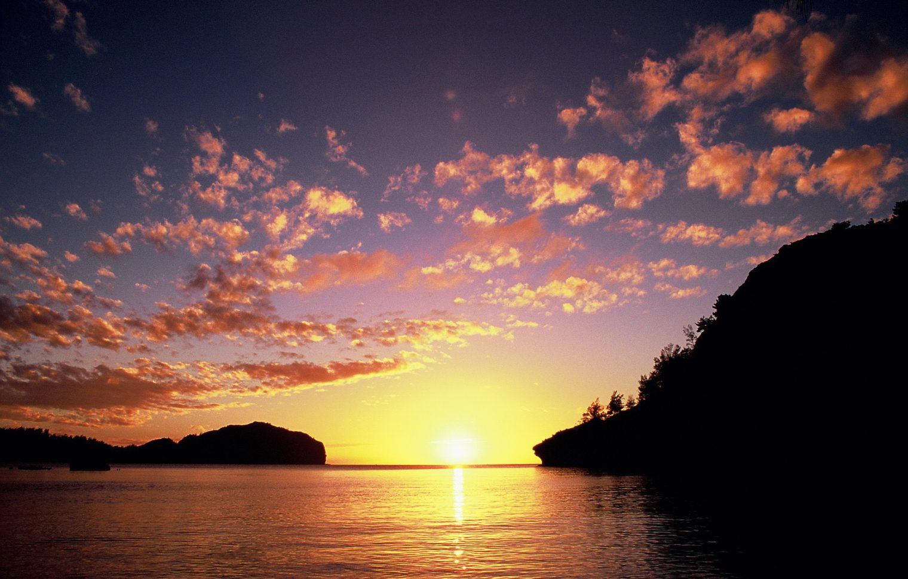
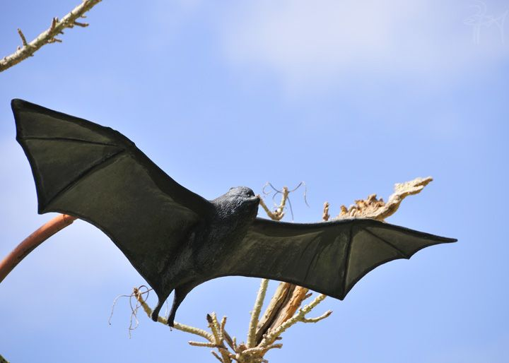
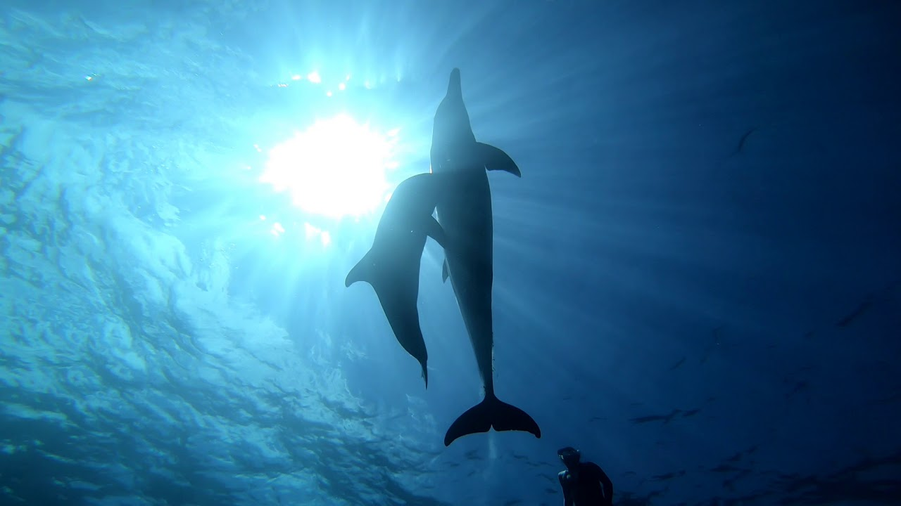
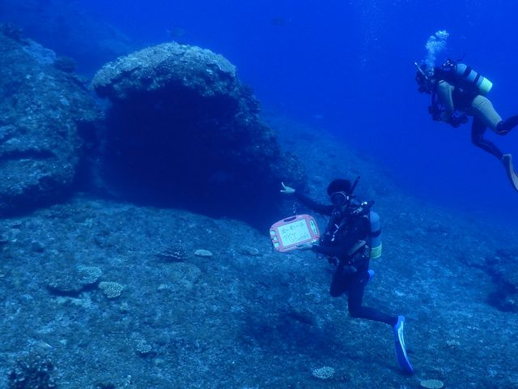
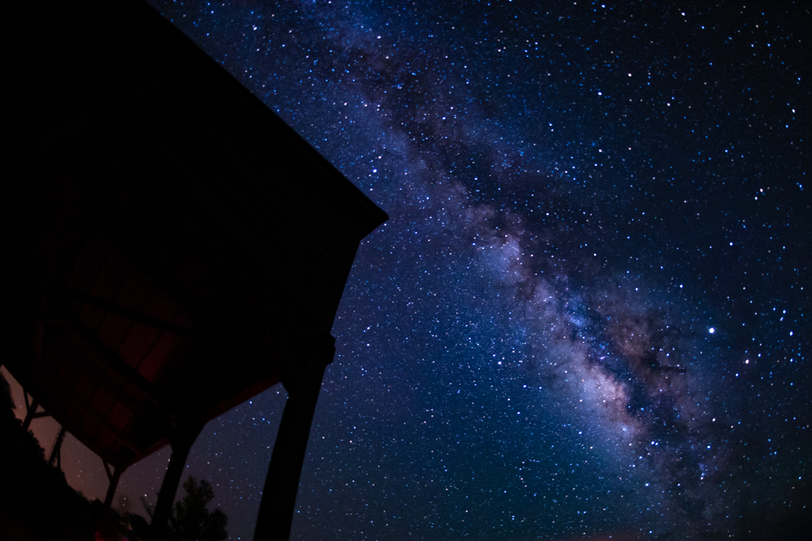
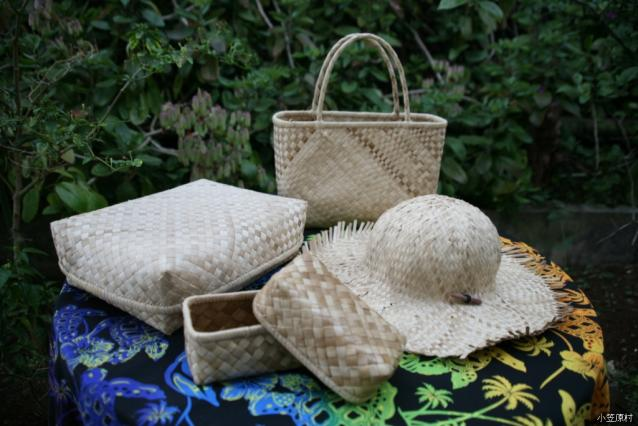

小笠原諸島
東京が有する独自の生態系が見える海洋島
『小笠原諸島』






小笠原諸島の島々の生態系は、島によって大きく異なる。島に定着した生物は、他の地域の生物と交わることがないため、
独自に進化し種分化が起こる。
このように期限が同じ生物群が、異なる環境に適応して生理的または形態的に分化することを適応放散という。
とりわけ小笠原諸島においては、陸産貝類と維管束植物が高い保有率を示しており、陸産貝類では、葉の表に住むか裏に住むかといった違いで、
異なる進化を遂げた例もある。
小笠原諸島の面積の小ささを考えると異例ともいえる。小笠原諸島で自然に分布している昆虫の約25％、
陸産貝類の約95％が固有種であるのに対し、哺乳類の固有種は絶滅危惧種のオガサワラオオコウモリのみである。

ドルフィンスイム・ウォッチング
野生のイルカに一年を通じてドルフィンウォッチングをすることが可能！一緒に泳ぐ体験をしてみよう！

スキューバダイビング
イルカやウミガメに出会えたり、美しいサンゴ礁や沈船ダイビングなど様々な楽しみ方で小笠原の海を満喫しよう！

ナイトツアー
夜の森ではほのかに緑に光るキノコ「グリーンペペ」をはじめ、満天の星空は夏以外でも天の川が見え、感動すること間違いなし！

クラフト
タコノ葉細工は小笠原の固有種「タコノキ」の葉を編み上げた、戦前から島に伝わる民芸品を制作する体験メニューはいかがですか？